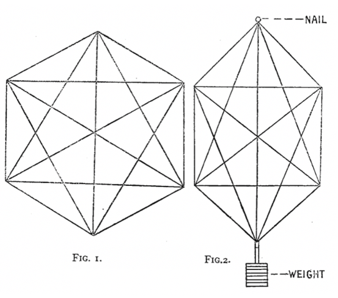

Here is the second fragment on early neoliberalism. The previous post being on Hayek, this one is on Michael Polanyi. Both built their approach to the world upon their abhorrence of the Soviet Union – a position that was unfashionable among intellectuals at the time. But where Hayek used his powerful refutation of central planning to take him where the argument could not reasonably stretch – to support laissez-faire – Polanyi was guilty of no such overreach.
Michael Polanyi and polycentrism
Like virtually all the important early neoliberals, Michael Polanyi was an émigré from central Europe. Polanyi’s training was in chemistry and from the early 1930s he became increasingly concerned at the idea that scientific development could be directed by the state – as the Soviet Union aspired to do and as Western left-wing intellectuals urged upon the West. He began writing against this tendency at about the time Hayek was articulating his own thinking about the centrality of information to the functioning of the economic system. But Polanyi’s concept of polycentricity provides a way into the question of distributed knowledge that is more general and parsimonious than Hayek’s elaboration of the way in which markets harness distributed knowledge for economic good.
Citing the image below in Figure 1 of a physical object made of straight rods and fastenings at the nodes, Polanyi asks us to imagine stressing it – as one would a model of a bridge – by nailing the top node to some fixture and hanging a weight from it as illustrated in Figure 2.
Figures 1 and 2

To work out the configuration of Figure 2 ‘monocentrically’, a singular intelligence would need to calculate all the stresses between each rod, not just directly but also indirectly through all the other rods. This cognitive task would be immensely complicated. And here we are thinking of a simple object subject to well-understood forces. In fact, the object is a functioning polycentric order. That is, one only need stress it by hanging a weight from it as illustrated in Fig 2 and it becomes an analogue computer solving polycentrically what was so complex to solve monocentrically. Each of the elements of the object adjusts to the stress. None has the ‘full picture’ but the various parts of the object ‘calculate’ an efficient response to the stress.
A wide range of formalized polycentric problems of which the solutions lie beyond the power of exact calculation can be solved by a suitable method of approximation, which is of great interest to us as it represents a perfect paradigm of coordination by independent mutual adjustments. The method consists in dealing with one centre at a time while supposing the others to be fixed in relation to the rest, for that time.[1.
Polanyi, Michael, 1951, The Logic of Liberty, Routlege, pp. 170-1. He’d earlier described the economy in similar terms:
Each interaction tends to a new mutual adjustment in the sense of a somewhat increased satisfaction to the consumer, as expressed by his own preference; and the series of continuously repeated mutual inter-actions tends to produce a distribution of resources in which each element of a resource is used by producers to the greatest satisfaction of the consumers, as expressed by their demand curves. The result may be called a dynamic order of production, because it is an arrangement of great complexity and usefulness, achieved by a series of direct lateral adjustments between individual producers making independent decisions.
He goes on:
The social legacies of language, writing, literature and of the various arts, pictorial and musical; of practical crafts, including medicine, agriculture, manufacture and the technique of communications; of sets of conventional units and measures, and of customs of intercourse; of religious, social and political thought all these are systems of dynamic order which were developed by the method of direct individual adjustment, described for Science and Law.
Polanyi, M., 1941. The growth of thought in society. Economica, 8(32), pp.428-456, p. 436,8.]The example Polanyi chooses to illustrate polycentricity would work perfectly in the embodied cognition literature as an example of what in that literature is called ‘causal spread’. That is, the causal mechanisms that lead the organism to perform in some way arise not simply from a brain at the centre cognising reality and effecting some intention by sending out millions of instructions to the various parts of the body to respond. Rather, the organism’s cognition of the world and its response, are distributed through that organism and/or its environment. Polanyi’s point is that science is a polycentric order in this sense; that it comprises numerous nodes of intelligence (scientists and teams of scientists) all operating autonomously but each mutually adjusting itself to others’ views and outputs. And as he makes clear, thinking of markets as polycentric orders offers a compelling way to reprise the arguments of the socialist calculation debate about the superiority of polycentric market economies to monocentric centrally planned ones.
"None has the ‘full picture’ but the various parts of the object ‘calculate’ an efficient response to the stress."
hmmm. In what way is it efficient? What is being described is that there is a reaction to changes by individual parts determined by a hugely complex set of inter-relations. But in what way is that reaction efficient? Social systems react, yes, but not always for the better. There is a leap of faith being made here.
I tend to think of markets as local opportunism. There is a lot of discovery in that as to what others want (which you can think of as good) but also as to how one can get away with stealing from the collective (not so good).
It seems self evidently simpler. Each of the parts has a simple task of mutual adjustment with other parts to arrive at the answer for the whole.
It's also true that this doesn't prove polycentric is always better. It does prove it seems to me that it's potentially much better. But the proof of the pudding will always be in the eating. I don't think Polanyi would object to anything you've said. He's simply setting out the idea of polycentricity – which, note, is not the same as 'spontaneous order' or the idea that the state is a 'natural' one.
yes, the notion of spreading the cognitive load by chopping a large problem into smaller bits each individually addressed by a specialised unit of course happens via markets but also via planning and bureaucracy. Indeed, bureaucracy can be rather good at tackling very complex problems by hacking it into smaller units. Think of armies and space programs. Not sure I'd call it embodied cognition.
I have been wondering whether morality is not a good example of this embodied cognition stuff. Like language, people dont have full morality maps in their heads, but rely on many others in their group to help tell them what they should think about things. The whole group has an implicit morality, but none that any individual can really articulate. Still, it is a morality that addresses many different situations and hypotheticals. One could say that the whole has a cognition (ie, a knowing) that the smaller units do not have but that arises from the different bits.
On your first point, as I've been thinking about organisations in this context, it's occurred to me that we always think of them as 'top-down' organisations – in other words hierarchical. Now it's true that that's where the ultimate power lies, so it's not unimportant. But as a cognitive unit, if they're of any size they are in fact intended to be forms of distributed cognition. So I'd say they are. Then the question becomes how they differ from the 'purer' forms that Polanyi is talking about. Certainly he envisages professions as being polycentric. Now what the firm wants, what the boss wants, is a fairly high degree of cognition and action from everyone in the organisation – as it will be so much more ineffective without it. They just want the right to interdict that at any point at their pleasure. So I'd say that it's quasi–polycentric, but not fully in Polanyi's sense.
I think this is quite a useful way to think because then when you consider markets versus hierarchies, you don't think of them as such different forms of order. They are in some ways of course but they require the same kind of capacity for cognition across the organism or they're very ineffective and inefficient organisms.
I agree with you that individuals' sense of morality is the substrate for embodied cognition in groups of people. And one of the formulations I stumbled into when sketching out what it was that made a generative order was that – at least in the two most classic ones – markets and culture – they exhibit qualities in which certain formations within the order give rise to both cognitive and affective effects which are fused together. Thus in markets prices offer a system of cognition whereby those in the order can identify value and an incentive to capture it. In culture – if we're to assume they're driven by Adam Smith's sympathy – that sympathy is a cognitive resource (how we understand others) and affective, motivating us to behave in particular ways. That's causal spread.
The principle I take from this is that many of the most useful 'hacks' in life will exhibit this causal spread. They will combine cognitive and motivational or affective resources. (They may also combine other resources together, but the idea here is that when you find one of these phenomena which ties different features of the world together in this way, you're starting to discover powerful principles according to which you can identify and/or design preferred organisational artefacts.) Intrinsic motivation also provides this causal spread unifying cognitive and affective aspects – and is utterly ignored by economics. Why am I not surprised? Meanwhile people who have to get things done in organisations are hugely focused on it.
"Thus in markets prices offer a system of cognition whereby those in the order can identify value and an incentive to capture it. In culture – if we’re to assume they’re driven by Adam Smith’s sympathy – that sympathy is a cognitive resource (how we understand others) and affective, motivating us to behave in particular ways. That’s causal spread. "
I get the first bit (prices as a system of cognition, ie as-if results from a hugely complex programming problem disseminated throughout the system allowing everyone to act as-if they know how it all fits together). But I dont get the second bit: sympathy as a cognitive resource within culture. I guess I could think of it as individuals using shaming and praising as individual price signals, leading to a kind of social market price for behaviour. Is that what you mean? Social norms as prices, really, with similar functions and origins?
And where's the cognitive/affective resource aspect in this? I can see prices as cognitive information on the motivations of the collective, but what's affective about prices?
Btw, on a tangent, much of what is supposedly neoliberalism is really about the resurrection of the idea of individual merit of the winners. In the era of nobility, there was the idea of merit through combat and noblesse oblige. In the era of the market, there is the idea of the interepid and worthy entrepreneur. One of the surprises is that so few rich people actually look like intrepid entrepreneurs. Most dont look like that at all. Neither intrepid, nor alone, nor innovative. Most, instead, look like system-people. Polanyi might not have had this in mind (I dont know - never read him), but the apologists for the rich certainly have interpreted the Austrian school that way. However, this a tangent: the powerful will always find a myth to cloak themselves with, one more hurdle between observation and truth.
Nicholas (& Paul)
one of the issues not directly addressed by Hayek or Polanyi I think is how the coordination evolves - with the simple answer being that we only get to see those systems (ie things involving interactions among some number of entities) where some minimal level of coordination has been achieved, however that has been done.
And if such systems compete, under defined conditions, the systems that achieve better coordination will survive better than the others.
Another thing that I think Hayek doesn't address, but Polanyi does, is the idea of "what is the goal" - in biological systems, it is survival; but in human systems, it can be something more, and if so, is defined by the aspirations, rules etc of the human systems.
And for example, social democrat systems tend to have more explicit aspirations, and more free-market systems are more about something like "allow what will happen to happen".
Overlaying this is the fact that power law distributions evolve in different ways in biological systems and human systems, somewhat ironically I think because the human systems almost invariably evolve to having distributions of power, which themselves affect the evolution of everything else.
Thanks
Sympathy – as the singular causal chain running through culture as Newton's gravity runs through his system of celestial mechanics (according to Smith) – is
* Cognitive – because we cannot understand each other except by imagining ourselves in their position. So sympathy performs the cognitive role of allowing us to understand one another (to the imperfect extent that we do).
* Affective and motivating because it inclines us emotionally in various ways towards what we see which motivates us to act in various ways (with action also comprehending words and gestures which might indicate that sympathy which is itself a social act.)
Does that make my claim clear?
Yes, very good point regarding goals. I was greatly taken with Polanyi's hierarchical scheme – surprisingly like the Great Chain of Being actually – which goes back to Aristotle I think – but all set out with as much simplicity and commonsense as any reductionist scheme.
Anyway, here's an introduction from the fourth of these marvellous lectures he gave in 1964.
no, not really. I agree one can describe sympathy as seeing some of ourselves in others, allowing us to understand them and share part of their motivation towards something. But how is that embodied cognition? Just seem a mental skill/trait to me, like the ability to speak or to see. Unlike prices, sympathy is individual, and sympathy for one will tug in a different direction to sympathy for someone else. So its more like an individual coordination device and skill.
Ok, Well I'm not sure how much further we can take this, but I draw your attention to my statement that "many of the most useful ‘hacks‘ in life will exhibit this causal spread" (emphasis added). I'm not saying that this dual character of sympathy and of prices (cognitive and motivational) is causal spread. I'm saying that it plays a role in a lot of hacks from which life builds up and in that sense is very often an active ingredient of the causal spread that characterises embodied cognition.
To some extent one could argue that this is true by definition – for instance via the following argument.
1. Rational action (in the weak not-necessarily human sense of action that supports a purpose) requires cognition and motivation.
2. If an organism resorts to embodied cognition for some routine – say a fly flying off when someone tries to swat it or a person catching a ball – then the organism needs to perform two functions, a cognitive one, and one that then leads to action.
3. If either of these are done in some way that it embodied rather than directed by the CPU or brain then one has the makings of a successful 'hack' of embodied cognition.
4. Prices in markets are powerful in this way providing both cognitive and motivational resources in a distrubuted way. Sympathy does the same thing – giving individuals cognitive resources for understanding one another and a motivation to act in sympathy with one another – to protect each other, to cooperate with each other.
this makes it a bit clearer how you think.
My difficulty was that this is not what I understand the term embodied cognition to mean. What you say in terms of market prices is more like distributed cognition (knowledge produced locally). This idea of emotions and sympathy as hacks (short-cuts) both internal t0 an individual and between individuals goes more to the nature of cognition itself. It smacks of situated cognition (emotions as a selection device to select the applicable narratives ("metaphors") and courses of action).
Maybe I am the only one confused by the term embodied cognition.
Note to self
Herbert Simon addresses some of the same things as the neoliberals when he tries to develop a process for investigating procedural, rather than substantive rationality – which led to his coining the term 'satisficing'. From his Sciences of the Artificial.
Now in many satisficing situations, the expected length of search for an alternative meeting specified standards of acceptability depends on how high the standards are set, but it depends hardly at all on the total size of the universe to be searched.